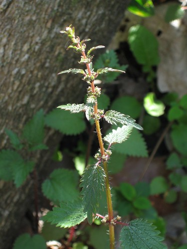
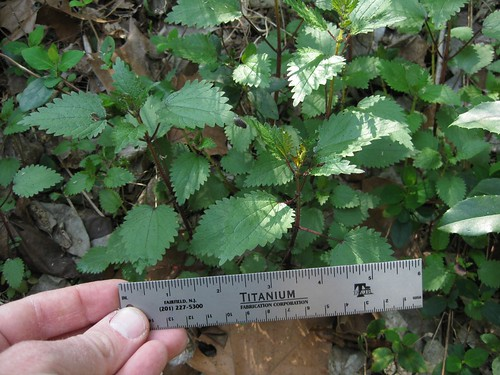
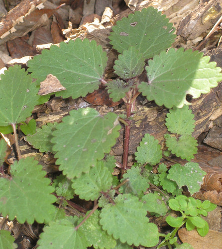

Scientific name: Urtica chamaedryoides, U. dioica, U. urens
Abundance: common
What: leaves and young stems
How: cooked greens, tea, cordage, fabric
Where: woods, borders, abandoned areas, woods, sunny and shady areas
When: spring, early summer
Nutritional Value: Rich in vitamins A,C,D,K, many minerals, and high in protein.
Dangers: can cause skin irritations, handle while wearing leather gloves. Cook to remove stingers before consuming.
Medicinal Summary
Leaves - anti-inflammatory; diuretic; local anesthetic; anti-diarrheal; hemostat (tisane, tincture)
Close-up of stinging nettles (Urtica chamaedryoides).

Patch of stinging nettles (Urtica chamaedryoides).

Young stinging nettles (Urtica chamaedryoides). They are tender and tasty while still this small.

Stinging nettles are known throughout the world as a very nutritious and highly medicinal plant though you must be careful when harvesting them. The stem and leaves are covered with tiny hollow needles filled with formic acid. Touching any of these needles will inject you with the formic acid which causes an extremely painful burning sensation.
These plants are easy to identify by their hairy, square stems and the burning sensation they cause when grabbed with the bare hand. Sidenote: don't grab them with your bare hand, it really hurts! If you do grab them with your bare hand the sting can be soothed by rubbing curled dock, plantain, or other astringent leaves on the area.
The young stems and leaves should be boiled approximately ten minutes to remove the formic acid before eating young nettle plants. Alternatively, seeping the leaves in hot water creates a very healthy tea loaded with vitamins and minerals.